Les shots flambés
Alignés sur le plateau, servis en flammes à la table.
« Il y a entre autres comme spécialités, leurs cocktails en bouteille que l'on boit dans des shots ou leurs shots flambés 👌 »Gwennaïg V., avis Google 4 étoiles
Bar cubain · Rue de Nimy · Mons
Une cave voûtée, un air de Havane près de la Grand‑Place
Cocktails, rhum, shots flambés et musique cubaine sous les briques de la cave. On y descend pour l'apéro, on y reste pour la soirée : tous les jours dès 14 h.
Tous les jours dès 14 h · jusqu'à 2 h
Happy hour le vendredi, 19 h – 20 hTerrasse sur la rue
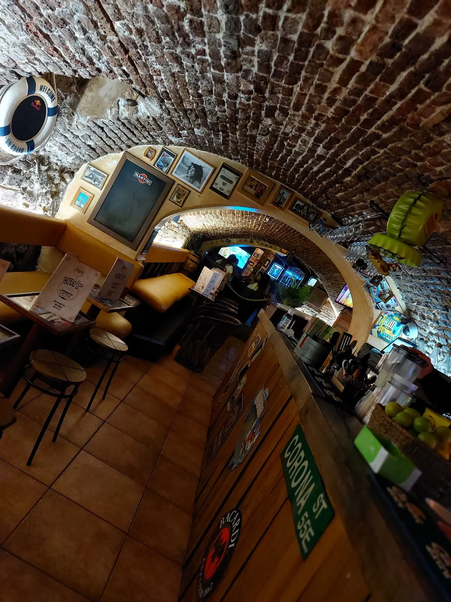
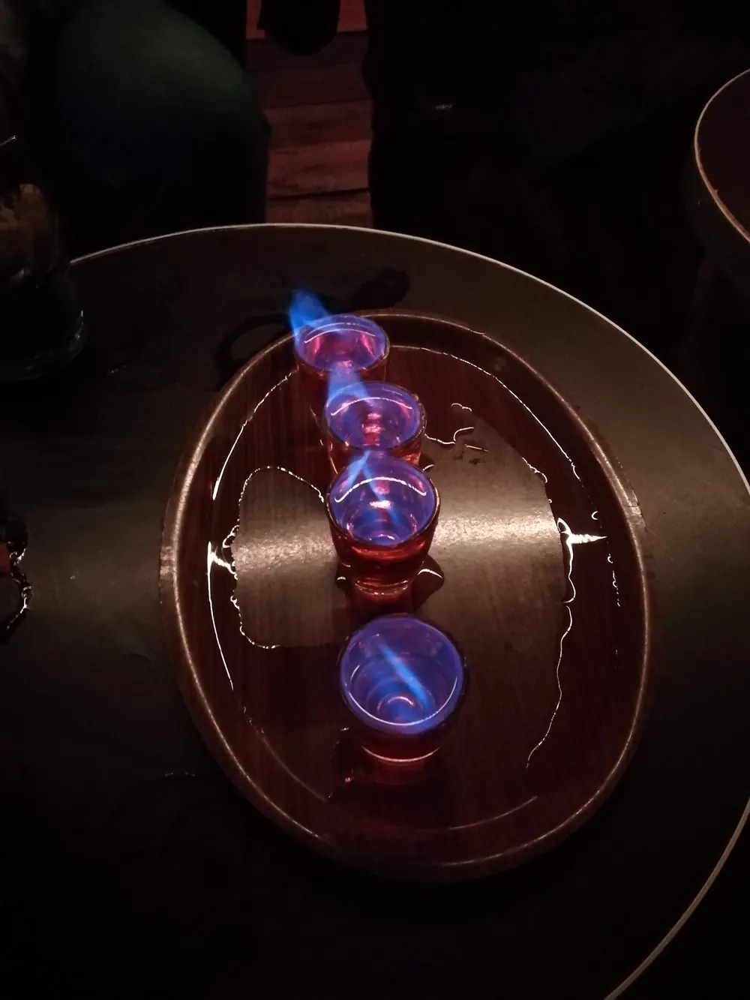
Au comptoir
Un rhum, un cocktail, un shot, et de quoi grignoter à côté : voici ce qui sort du bar, tel que les clients et l'équipe l'ont photographié.
Alignés sur le plateau, servis en flammes à la table.
« Il y a entre autres comme spécialités, leurs cocktails en bouteille que l'on boit dans des shots ou leurs shots flambés 👌 »Gwennaïg V., avis Google 4 étoiles
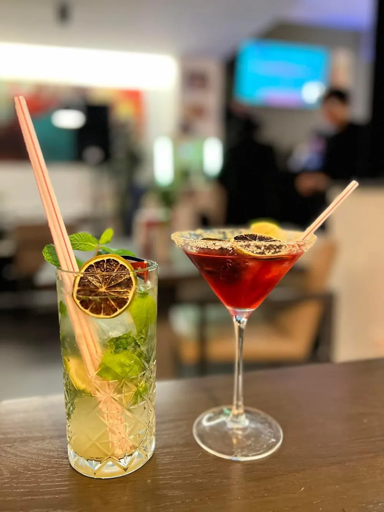
Le long drink à la menthe et sa rondelle séchée, le rouge servi en coupe.
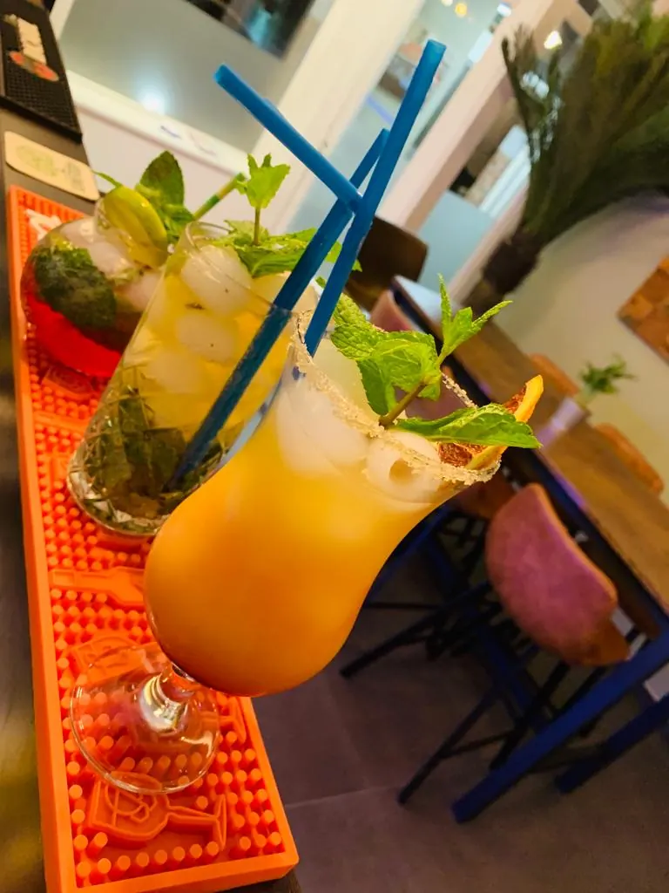
Orangé, menthe fraîche, pailles bleues : posé sur le tapis du bar.
Une des meilleures cartes de cocktail de la région.
VisitMons · la présentation du Cuba'r sur le site de l'office du tourisme de Mons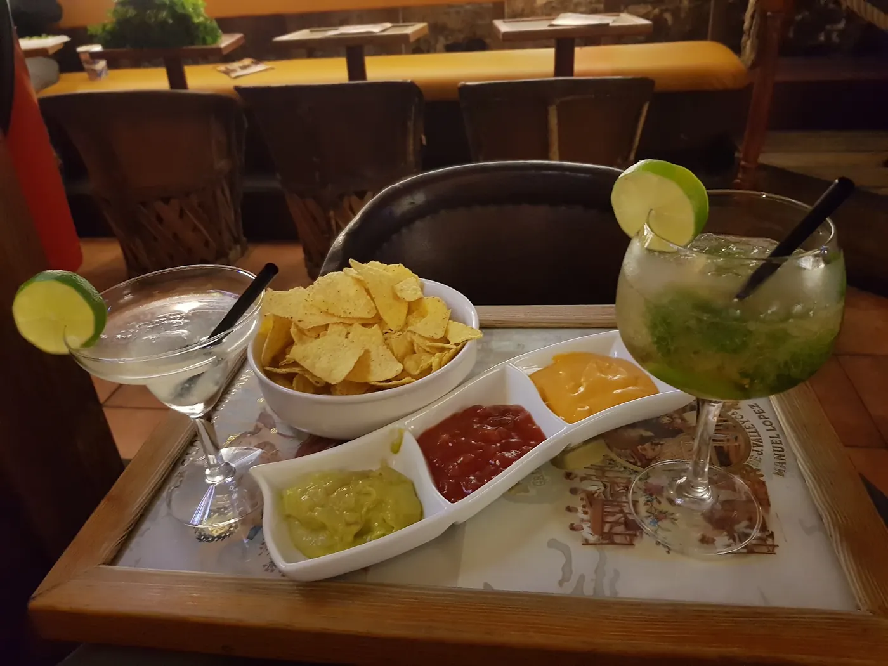
Le plateau à poser entre deux cocktails. Comme dit VisitMons : « Commandez un rhum, un cocktail, un shot, le tout accompagné de nachos ».
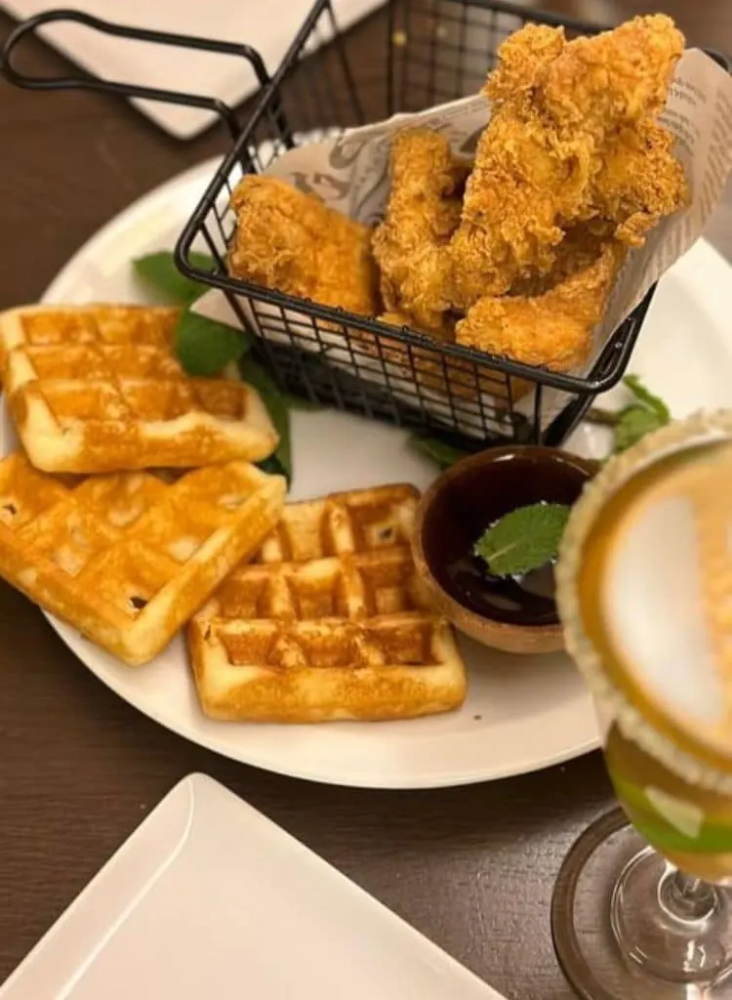
Filets de poulet frits, gaufre à la belge, sirop d'érable chaud.
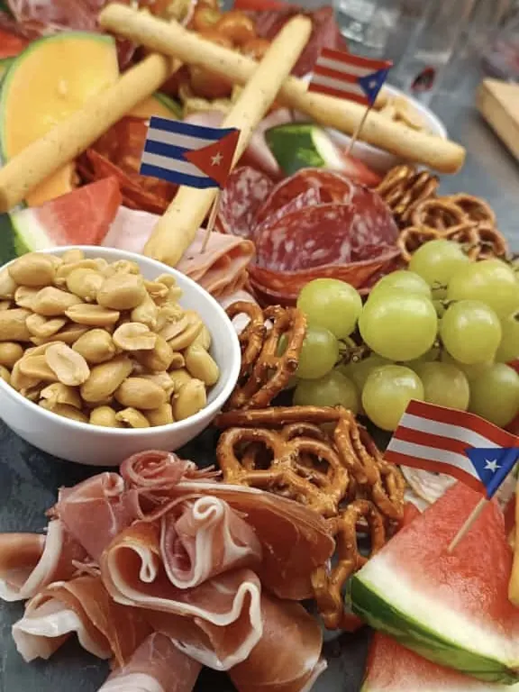
Charcuterie, pastèque, raisin, cacahuètes, et des petits drapeaux de Cuba.
Chaque vendredi
19h20h
Le meilleur moment pour descendre à la cave : réservez votre table pour 19 h et commencez la soirée au bon prix.
La carte complète et les prix sont au bar.
Sans attendre une table libre
Un verre à deux, un anniversaire, un afterwork entre collègues : choisissez le jour, l'heure et le nombre, et votre table vous attend à la cave.
Vendredi, visez 19 h : c'est l'happy hour.De 19 h à 20 h, selon VisitMons.
Tous les jours, dès 14 hPlus de 25 personnes ? 065 31 13 11
La cave de la Revolución
On descend dans une cave voûtée : murs de briques, cadres, banquettes et bar en bois, musique cubaine en fond. Au rez-de-chaussée, une salle aux murs jaunes et ses tables posées sur des tonneaux ; devant, la terrasse sur la rue de Nimy.
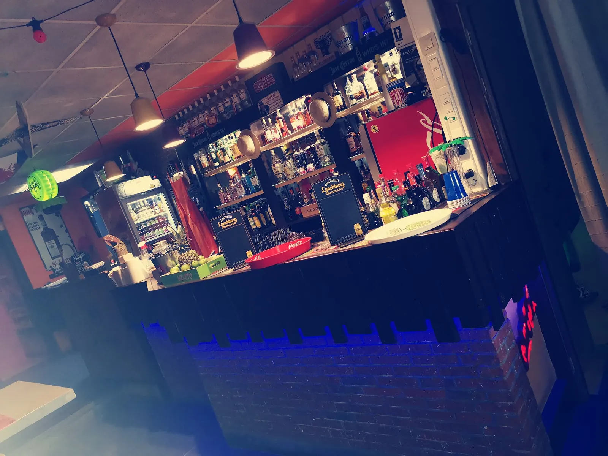
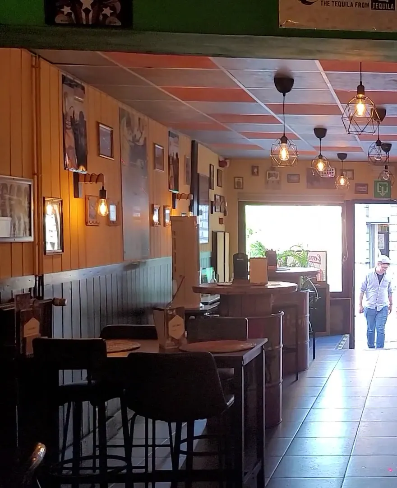
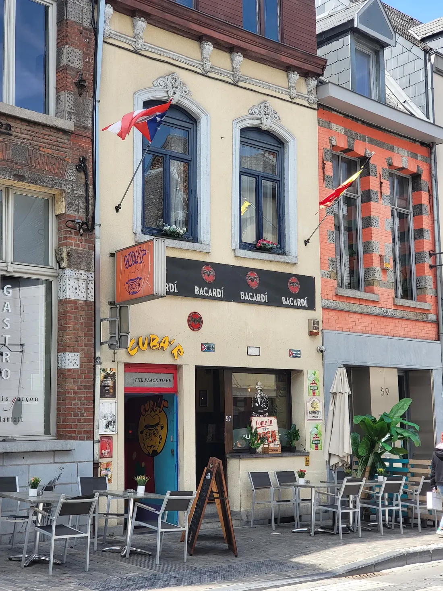
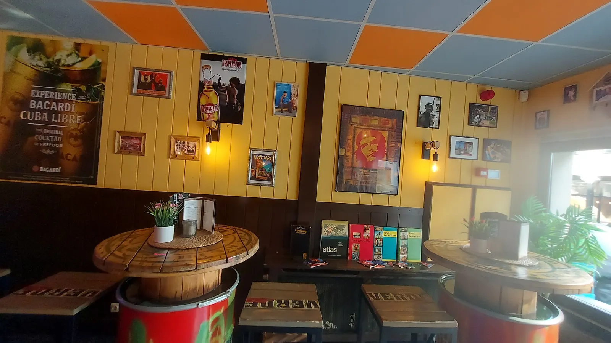
« Petit bar caché dans une cave, vraiment sympa, avec une chouette ambiance grâce à la musique type cubaine, la lumière tamisée et au personnel que j'ai toujours vu souriant. »
Gwennaïg V., avis Google 4 étoiles« […] il n'y a pas de réseau dans ce bar. » Tant mieux pour la conversation.
Rythmes salsa et lumière tamisée : le Malecón, version Mons.
Tables et chaises sur le trottoir, devant l'enseigne jaune.
Rue de Nimy, à quelques minutes à pied du centre.
Ils l'ont écrit sur Google
Ouvert tous les jours, de 14 h à 2 h
| lundi | 14 h – 2 h |
|---|---|
| mardi | 14 h – 2 h |
| mercredi | 14 h – 2 h |
| jeudi | 14 h – 2 h |
| vendredi | 14 h – 2 h · happy hour 19 h – 20 h |
| samedi | 14 h – 2 h |
| dimanche | 14 h – 2 h |
Ouverture et happy hour : VisitMons. Fermeture à 2 h : fiche Google.